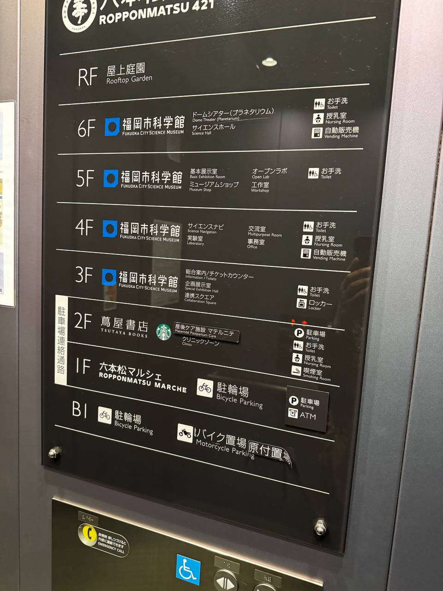
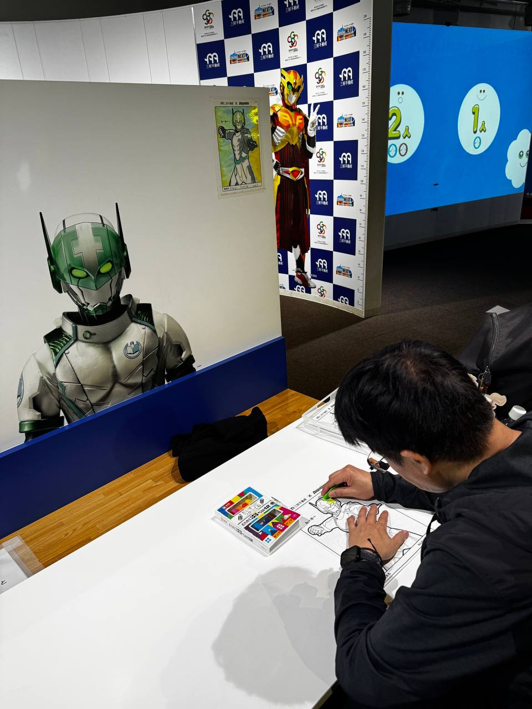
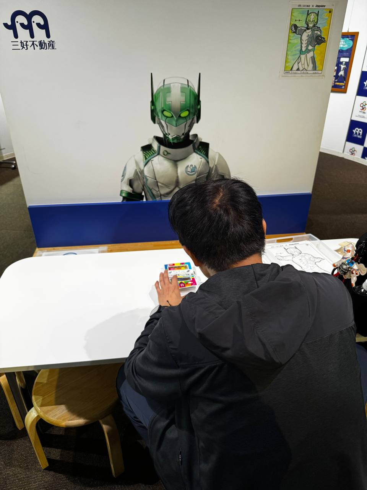
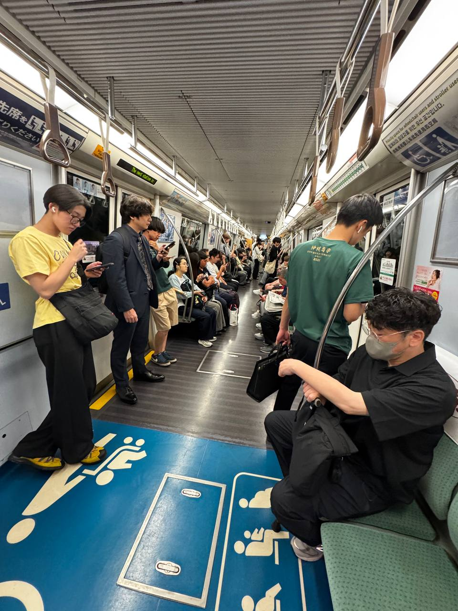
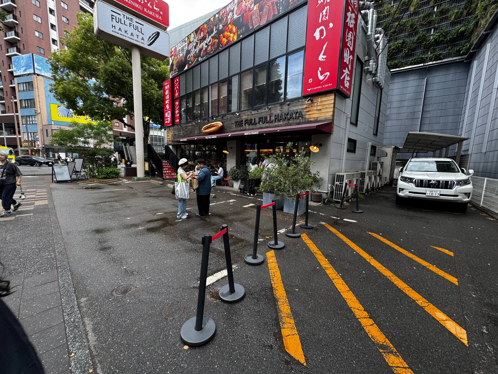
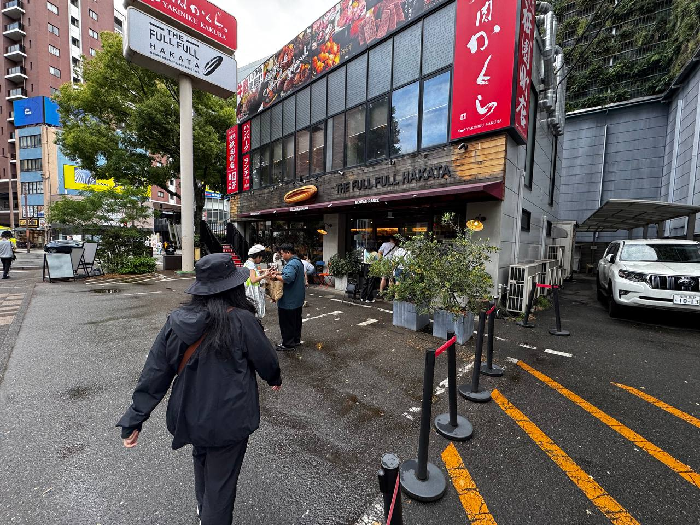
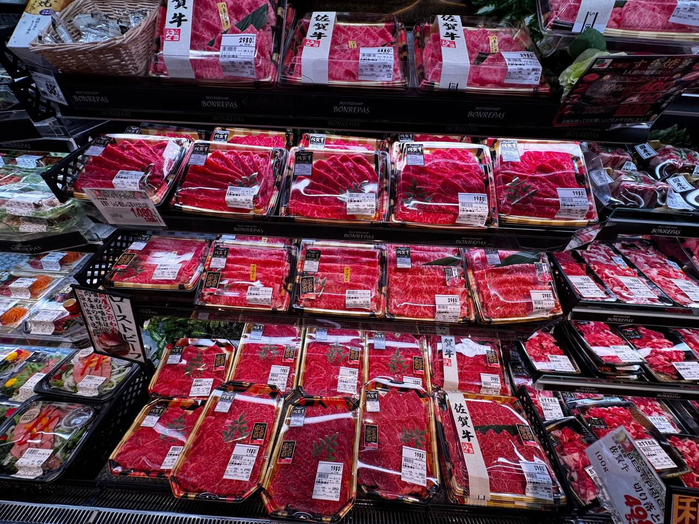
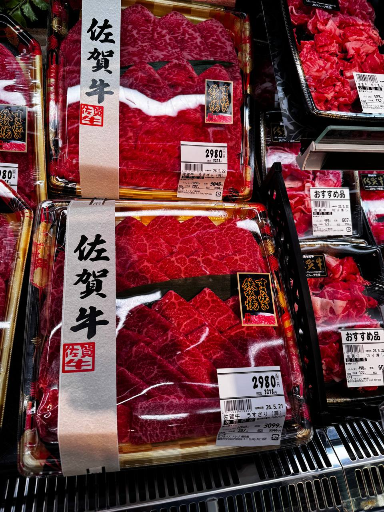
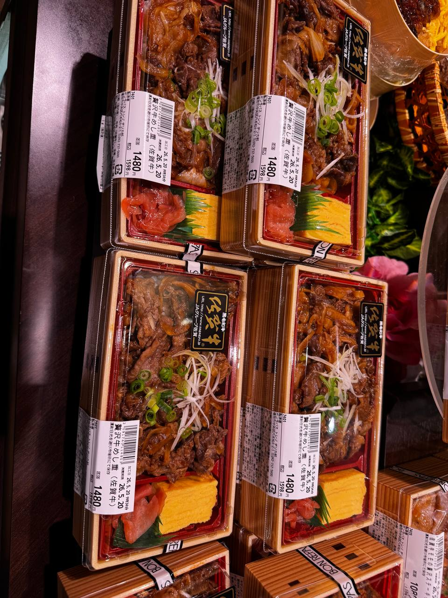

福岡之旅 · Day 4 — 前田屋牛腸鍋之夜
2026-05-20


 <\\/figure>
<\\/figure>
 <\\/figure>
}
<\\/figure>
}

 ← 回部落格首頁
← 回部落格首頁
? 早晨 — 搭火車去六本松
第四天早上，搭上火車前往六本松。六本松一帶有許多文青小店和咖啡館，氛圍和博多市區很不一樣。
? 六本松科學館
到了六本松之後，去了當地的科學館，裡面有許多互動展覽，還順便畫了一張可愛的圖 ?




alt="科學館展品2"/> " alt="科學館畫的可愛圖"/>第四天晚上，回到博多，來到前田屋吃牛腸鍋（もつ鍋）。
前田屋是博多在地人推薦的もつ鍋老店，濃郁的醬油湯底，搭配新鮮的牛腸、韭菜和高麗菜，煮到入味後再喝一口湯，是福岡冬天最療癒的味道。
鍋裡的牛腸煮得軟嫩彈牙，吸滿了湯汁的精華。搭配生啤酒，完美的 ending ?
--><\\/figure>
<\\/figure>
}
? 終於！FULL 的明太子麵包
前一天（Day 3）去 FULL Full Hakata 撲空了（星期二公休），第四天不死心再去一次，終於買到了傳說中的明太子麵包 ?


FULL Full Hakata 的明太子麵包果然名不虛傳，烤得外酥內軟，明太子的鹹香和奶油完美融合。排隊也值得 ?
? 六本松超市 — 日本的牛肉價格太誇張
在六本松散步時逛了當地的超市，看到牛肉的價格真的嚇一跳——這麼好的品質，在台灣可能要貴上好幾倍 ?


